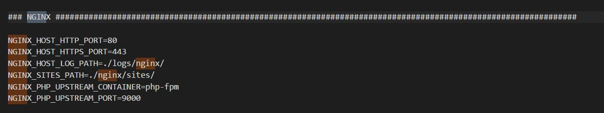
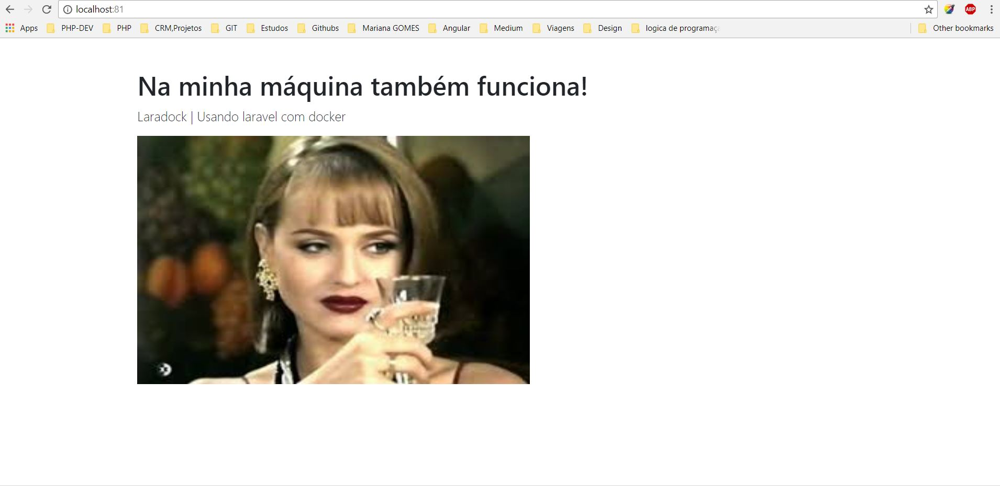

LaraDock
Ambiente Completo Laravel com Docker
Created by Mariana Gomes
Sobre mim
- Mariana Gomes
- Cientista da computação
- Amante de meetups e hackathons

O que já sabemos...
- Ambiente em primeiro lugar.
- Cada OS tem suas peculiaridades
- Compatibilidade e boa usabilidade Linux e Mac
Mas, e agora?

Na minha máquina também funciona
Como eu fiz...
 +
+

Vamos lá...
Download docker em store docker
Download GIT
Clonando repositório
Crie uma pasta C:/docker
git clone https://github.com/laradock/laradock
No diretório laradock
copiando o arquivo .env
Configurações do arquivo .env
.env estão todas as configurações sensivéis

Subindo os containers
docker-compose up -d mysql nginx phpmyadmin
Containers rodando
docker ps
Erro: 404 not found
calma!
O que fazer?
em C:/docker criar um novo repositório com nome public e adicionamos uma página
Pronto
Obrigada!
Twitter:@mmariana_gomes
telegram:@mmariana_gomes
github:@marianagomesjob